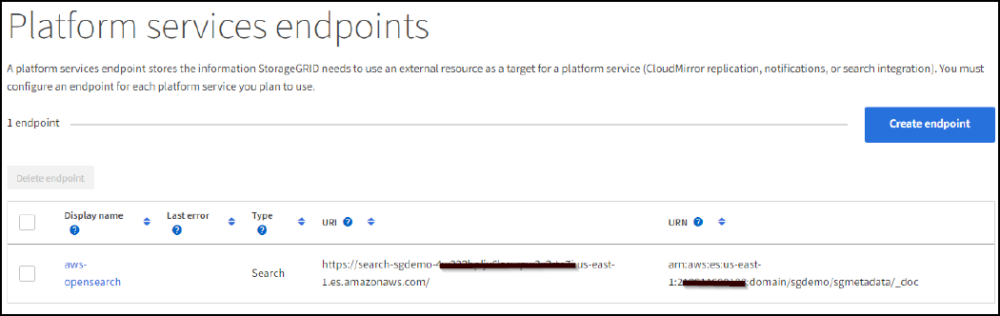

Dokumentationsänderungen beantragen
Dokumentationsänderungen beantragen In GitHub bearbeiten
In GitHub bearbeiten Leitfaden für Beitragende
Leitfaden für BeitragendeKonfigurieren Sie den Integrationsservice für die StorageGRID Suche
Beitragende
Dieses Handbuch enthält detaillierte Anweisungen zur Konfiguration des NetApp StorageGRID 11.6 Suchintegrationsservice mit Amazon OpenSearch Service oder On-Premises-Elasticsearch.
Einführung
StorageGRID unterstützt drei Arten von Plattform-Services.
-
StorageGRID CloudMirror Replikation. Spiegeln bestimmter Objekte aus einem StorageGRID-Bucket auf ein angegebenes externes Ziel
-
Benachrichtigungen. Bucket-spezifische Ereignisbenachrichtigungen senden Benachrichtigungen über bestimmte Aktionen, die an Objekten durchgeführt werden, an einen bestimmten externen Amazon Simple Notification Service (Amazon SNS).
-
Integrationsservice suchen. Senden von einfachen Storage Service (S3) Objektmetadaten in einen angegebenen Elasticsearch-Index, wo Sie die Metadaten mithilfe des externen Service durchsuchen oder analysieren können.
Plattform-Services werden vom S3-Mandanten über die Mandanten-Manager-UI konfiguriert. Weitere Informationen finden Sie unter "Überlegungen bei der Verwendung von Plattform-Services".
Dieses Dokument dient als Ergänzung zum "StorageGRID 11.6 Mandantenleitfaden" Und enthält Schritt-für-Schritt-Anleitungen und Beispiele für die Endpunkt- und Bucket-Konfiguration für Suchintegrations-Services. Die hier enthaltene Anleitung zur Einrichtung von Amazon Web Services (AWS) oder lokalen Elasticsearch-Services dienen nur zu Test- oder Demonstrationszwecken.
Zielgruppen sollten mit Grid Manager, Mandanten-Manager vertraut sein und über den S3-Browser Zugang verfügen, um grundlegende Vorgänge zum Hochladen (PUT) und Herunterladen (GET) für StorageGRID-Suchintegrationstests durchzuführen.
Erstellung von Mandanten und Aktivierung von Plattform-Services
-
Erstellen Sie einen S3-Mandanten mithilfe von Grid Manager, geben Sie einen Anzeigenamen ein und wählen Sie das S3-Protokoll aus.
-
Wählen Sie auf der Berechtigungsseite die Option Plattformdienste zulassen. Wählen Sie ggf. andere Berechtigungen aus.

-
Richten Sie das ursprüngliche Kennwort des Mandanten-Root-Benutzers ein, oder wählen Sie, falls im Raster der Identifikationsverbund aktiviert ist, welche föderierte Gruppe Root-Zugriffsberechtigungen hat, um das Mandantenkonto zu konfigurieren.
-
Klicken Sie auf als Stamm anmelden und wählen Sie Bucket: Erstellen und verwalten.
Dies führt Sie zur Seite Tenant Manager.
-
Wählen Sie im Tenant Manager My Access Keys aus, um den S3-Zugriffsschlüssel für spätere Tests zu erstellen und herunterzuladen.
Integrationsservices mit Amazon OpenSearch suchen
Einrichtung des Amazon OpenSearch Service (ehemals Elasticsearch)
Verwenden Sie dieses Verfahren für eine schnelle und einfache Einrichtung des OpenSearch-Dienstes nur zu Test-/Demo-Zwecken. Wenn Sie On-Premises-Elasticsearch für Suchintegrationsservices verwenden, lesen Sie den Abschnitt Suchintegrations-Services für On-Premises-Elasticsearch.

|
Sie müssen über eine gültige Anmeldung für die AWS-Konsole, einen Zugriffsschlüssel, einen geheimen Zugriffsschlüssel und die Berechtigung zum Abonnieren des OpenSearch-Dienstes verfügen. |
-
Erstellen Sie mithilfe der Anweisungen von eine neue Domäne "AWS OpenSearch Service – erste Schritte", Mit Ausnahme der folgenden:
-
Schritt 4: Domain-Name: Sgdemo
-
Schritt 10: Feinkörnige Zugriffssteuerung: Deaktivieren Sie die Option Enable Fine-genarainable Access Control.
-
Schritt 12: Zugriffsrichtlinie: Wählen Sie Zugriffsrichtlinie auf Zugriffsebene konfigurieren, wählen Sie die Registerkarte JSON aus, um die Zugriffsrichtlinie anhand des folgenden Beispiels zu ändern:
-
Ersetzen Sie den hervorgehobenen Text durch Ihre eigene AWS IAM-ID (Identity and Access Management) und Ihren Benutzernamen.
-
Ersetzen Sie den markierten Text (die IP-Adresse) durch die öffentliche IP-Adresse Ihres lokalen Computers, über den Sie auf die AWS-Konsole zugreifen.
-
Öffnen Sie eine Browserregisterkarte für "https://checkip.amazonaws.com" Um Ihre öffentliche IP zu finden.
{ "Version": "2012-10-17", "Statement": [ { "Effect": "Allow", "Principal": {"AWS": "arn:aws:iam:: nnnnnn:user/xyzabc"}, "Action": "es:*", "Resource": "arn:aws:es:us-east-1:nnnnnn:domain/sgdemo/*" }, { "Effect": "Allow", "Principal": {"AWS": "*"}, "Action": [ "es:ESHttp*" ], "Condition": { "IpAddress": { "aws:SourceIp": [ "nnn.nnn.nn.n/nn" ] } }, "Resource": "arn:aws:es:us-east-1:nnnnnn:domain/sgdemo/*" } ] }
-
-
-
Warten Sie 15 bis 20 Minuten, bis die Domain aktiv ist.

-
Klicken Sie auf OpenSearch Dashboards URL, um die Domäne in einer neuen Registerkarte zu öffnen, um auf das Dashboard zuzugreifen. Wenn ein Fehler beim Zugriff verweigert wird, überprüfen Sie, ob die Quell-IP-Adresse der Zugriffsrichtlinie korrekt auf Ihre öffentliche IP-Adresse des Computers eingestellt ist, um den Zugriff auf das Domain-Dashboard zu ermöglichen.
-
Wählen Sie auf der Willkommensseite des Dashboards „Explore“ auf eigene Faust aus. Wählen Sie im Menü „Management → Entwicklungstools“
-
Geben Sie unter Dev Tools → Console ein
PUT <index>Wo Sie den Index zum Speichern von StorageGRID-Objektmetadaten verwenden. Im folgenden Beispiel verwenden wir den Indexnamen 'sgmetadaten'. Klicken Sie auf das kleine Dreieck-Symbol, um den PUT-Befehl auszuführen. Das erwartete Ergebnis wird im rechten Bereich angezeigt, wie im folgenden Beispiel Screenshot dargestellt.
-
Überprüfen Sie, ob der Index über die Benutzeroberfläche von Amazon OpenSearch unter sgdomain > Indizes sichtbar ist.

Endpoint-Konfiguration für Plattform-Services
Gehen Sie wie folgt vor, um die Endpunkte der Plattformservices zu konfigurieren:
-
In Tenant Manager wechseln Sie zu STORAGE(S3) > Plattform-Services-Endpunkten.
-
Klicken Sie auf Endpunkt erstellen, geben Sie Folgendes ein und klicken Sie dann auf Weiter:
-
Beispiel für einen Anzeigenamen
aws-opensearch -
Der Domänenendpunkt im Beispiel-Screenshot unter Schritt 2 des vorhergehenden Verfahrens im URI-Feld.
-
Die Domäne ARN, die in Schritt 2 des vorhergehenden Verfahrens im Feld URN verwendet wurde und addieren
/<index>/_docBis zum Ende von ARN.In diesem Beispiel wird URN
arn:aws:es:us-east-1:211234567890:domain/sgdemo /sgmedata/_doc.

-
-
Um auf die Amazon OpenSearch sgdomain zuzugreifen, wählen Sie als Authentifizierungstyp den Zugriffsschlüssel aus, und geben Sie dann den Amazon S3-Zugriffsschlüssel und den geheimen Schlüssel ein. Um zur nächsten Seite zu gelangen, klicken Sie auf Weiter.

-
Um den Endpunkt zu überprüfen, wählen Sie Operating System CA Certificate und Test and Create Endpoint aus. Wenn die Überprüfung erfolgreich ist, wird ein Endpunkt-Bildschirm angezeigt, der der folgenden Abbildung entspricht. Wenn die Überprüfung fehlschlägt, überprüfen Sie, ob der URN umfasst
/<index>/_docAm Ende des Pfads und der AWS Zugriffsschlüssel und der Geheimschlüssel sind korrekt.
Suchintegrations-Services für On-Premises-Elasticsearch
Elasticsearch-Einrichtung vor Ort
Dieses Verfahren dient der schnellen Einrichtung von vor-Ort-Elasticsearch und Kibana mit Docker nur zu Testzwecken. Wenn Elasticsearch und Kibana-Server bereits vorhanden sind, fahren Sie mit Schritt 5 fort.
-
Folgen Sie diesen Anweisungen "Docker-Installationsvorgang" So installieren Sie den Docker. Wir verwenden den "CentOS Docker Installationsverfahren" In diesem Setup.
sudo yum install -y yum-utils sudo yum-config-manager --add-repo https://download.docker.com/linux/centos/docker-ce.repo sudo yum install docker-ce docker-ce-cli containerd.io sudo systemctl start docker
-
Um den Docker nach dem Neustart zu starten, geben Sie Folgendes ein:
sudo systemctl enable docker
-
Stellen Sie die ein
vm.max_map_countWert für 262144:sysctl -w vm.max_map_count=262144
-
Um die Einstellung nach dem Neustart zu behalten, geben Sie Folgendes ein:
echo 'vm.max_map_count=262144' >> /etc/sysctl.conf
-
-
Folgen Sie den "Elasticsearch Quick Start Guide" Selbstverwalteter Abschnitt zum Installieren und Ausführen der Elasticsearch- und Kibana-Docker. In diesem Beispiel wurde die Version 8.1 installiert.

Beachten Sie den Benutzernamen/das Kennwort und das Token, das Elasticsearch erstellt hat. Sie müssen diese zum Starten der Kibana UI und der StorageGRID-Plattform-Endpunktauthentifizierung verwenden. 
-
Nachdem der Kibana-Docker-Container gestartet wurde, wird der URL-Link aufgerufen
https://0.0.0.0:5601Wird in der Konsole angezeigt. Ersetzen Sie 0.0.0.0 durch die Server-IP-Adresse in der URL. -
Melden Sie sich mit dem Benutzernamen bei der Kibana-Benutzeroberfläche an
elasticUnd das Passwort, das im vorherigen Schritt von Elastic generiert wurde. -
Wenn Sie sich zum ersten Mal anmelden möchten, wählen Sie auf der Begrüßungsseite „Explore“. Wählen Sie im Menü Verwaltung > Entwicklungstools.
-
Geben Sie auf dem Bildschirm Dev Tools Console die Eingabe ein
PUT <index>Dort, wo Sie diesen Index zum Speichern von StorageGRID-Objektmetadaten verwenden. Wir verwenden den IndexnamensgmetadataIn diesem Beispiel. Klicken Sie auf das kleine Dreieck-Symbol, um den PUT-Befehl auszuführen. Das erwartete Ergebnis wird im rechten Bereich angezeigt, wie im folgenden Beispiel Screenshot dargestellt.
Endpoint-Konfiguration für Plattform-Services
Gehen Sie wie folgt vor, um Endpunkte für Plattformservices zu konfigurieren:
-
In Tenant Manager wechseln Sie zu STORAGE (S3) > Plattform-Services-Endpunkten
-
Klicken Sie auf Endpunkt erstellen, geben Sie Folgendes ein und klicken Sie dann auf Weiter:
-
Beispiel für Anzeigename:
elasticsearch -
URI:
https://<elasticsearch-server-ip or hostname>:9200 -
URNE:
urn:<something>:es:::<some-unique-text>/<index-name>/_docWobei der Indexname der Name ist, den Sie auf der Kibana-Konsole verwendet haben. Beispiel:urn:local:es:::sgmd/sgmetadata/_doc
-
-
Wählen Sie Basic HTTP als Authentifizierungstyp, geben Sie den Benutzernamen ein
elasticUnd das durch den Elasticsearch-Installationsprozess generierte Passwort. Um zur nächsten Seite zu gelangen, klicken Sie auf Weiter.
-
Wählen Sie Zertifikat nicht überprüfen und Endpunkt erstellen und testen, um den Endpunkt zu überprüfen. Wenn die Überprüfung erfolgreich ist, wird ein Endpunkt-Bildschirm angezeigt, der dem folgenden Screenshot ähnelt. Wenn die Überprüfung fehlschlägt, überprüfen Sie, ob die Einträge für URN, URI und Benutzername/Passwort korrekt sind.

Konfiguration des integrierten Service für die Bucket-Suche
Nachdem der Plattform-Service-Endpunkt erstellt wurde, besteht der nächste Schritt darin, diesen Service auf Bucket-Ebene zu konfigurieren, um Objektmetadaten an den definierten Endpunkt zu senden, sobald ein Objekt erstellt, gelöscht oder seine Metadaten oder Tags aktualisiert werden.
Sie können die Suchintegration mit Tenant Manager konfigurieren, um eine benutzerdefinierte StorageGRID-Konfigurations-XML auf einen Bucket anzuwenden wie folgt:
-
Wählen Sie in Tenant Manager „STORAGE(S3)“ > „Buckets“
-
Klicken Sie auf Create Bucket. Geben Sie den Bucket-Namen ein (z. B.
sgmetadata-test) Und akzeptieren Sie die Standardeinstellungus-east-1Werden. -
Klicken Sie Auf Weiter > Bucket Erstellen.
-
Um die Seite „Bucket-Übersicht“ aufzurufen, klicken Sie auf den Bucket-Namen und wählen Sie „Platform Services“ aus.
-
Wählen Sie das Dialogfeld Integration der Suche aktivieren aus. Geben Sie im angegebenen XML-Feld die Konfigurations-XML-XML-Datei unter Verwendung dieser Syntax ein.
Der hervorgehobene URN muss mit dem von Ihnen definierten Endpunkt für Plattformservices übereinstimmen. Sie können eine weitere Browserregisterkarte öffnen, um auf den Mandantenmanager zuzugreifen und URN vom definierten Endpunkt der Plattformdienste zu kopieren.
In diesem Beispiel haben wir kein Präfix verwendet, was bedeutet, dass die Metadaten für jedes Objekt in diesem Bucket an den zuvor definierten Elasticsearch-Endpunkt gesendet werden.
<MetadataNotificationConfiguration> <Rule> <ID>Rule-1</ID> <Status>Enabled</Status> <Prefix></Prefix> <Destination> <Urn> urn:local:es:::sgmd/sgmetadata/_doc</Urn> </Destination> </Rule> </MetadataNotificationConfiguration> -
Verwenden Sie S3-Browser, um eine Verbindung zu StorageGRID mit dem Mandantenzugriff/geheimen Schlüssel herzustellen und Testobjekte in hochzuladen
sgmetadata-testBucket und fügen Sie Tags oder benutzerdefinierte Metadaten zu Objekten hinzu.
-
Verwenden Sie die Kibana UI, um zu überprüfen, ob die Objektmetadaten in den Index der sgmetadaten geladen wurden.
-
Wählen Sie im Menü Verwaltung > Entwicklungstools.
-
Fügen Sie die Beispielabfrage in das Konsolenfenster auf der linken Seite ein, und klicken Sie auf das Dreieckssymbol, um sie auszuführen.
Das Beispielergebnis für die Abfrage 1 im folgenden Beispiel-Screenshot zeigt vier Datensätze. Dies entspricht der Anzahl der Objekte im Bucket.
GET sgmetadata/_search { "query": { "match_all": { } } }
Das Beispielergebnis für Abfrage 2 im folgenden Screenshot zeigt zwei Datensätze mit Tag-Typ jpg.
GET sgmetadata/_search { "query": { "match": { "tags.type": { "query" : "jpg" } } } }+ image::../media/storagegrid-search-integration-service/sg-sis-query-two-sample.png[Probe 2 abfragen]
-
Wo Sie weitere Informationen finden
Sehen Sie sich die folgenden Dokumente und/oder Websites an, um mehr über die in diesem Dokument beschriebenen Informationen zu erfahren: